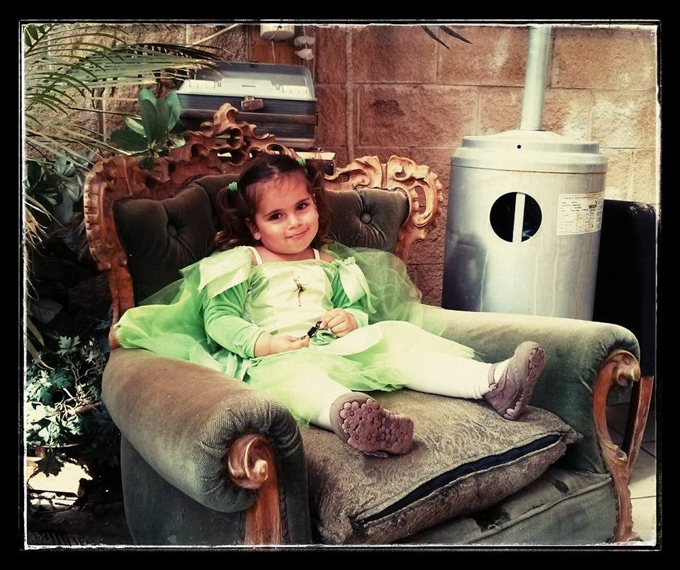

על פיות, הוראה ולמידה משמעותית

אנחנו שונים. זאת עובדה.
לכל אחד מאיתנו חוזקות, חולשות ואת הדרך המסויימת שעוזרת לנו ללמוד..
היה לי תלמיד, שלימדתי אותו תרגילי חיבור וחיסור עד 10, דרך קפיצות הלוך ושוב עם סרגל ענק של מספרים..
תלמידה שהתמסרתי איתה בכדור תוך כדי פירוק צלילים של מילים..
תלמיד שהכנתי לו משחק זיכרון עם מילים קשות, שהיו חלק מסיפור שטרם קראנו..
וארסנל הדוגמאות עוד מלא וגדוש..
מה משותף לכל אלה?
לכל אחד מהם התאימה שיטה אחרת להמחשת חומר הלימוד. שיטה או כלי שהיו עוצמתיים דיים על מנת להשאיר את חווית הלמידה חקוקה בזיכרון.
זו בעצם הוראה מתקנת. הוראה שמתאימה את עצמה ללומד ולצרכים שלו. הענקת שיטות או כלים, דרכם יוכל לחוות את הלמידה באופן מוחשי וחזק.
חשוב להבין, שהוראה מתקנת היא לא קסם ואני, עד כמה שארצה.. לא פיה בעלת שרביט קסמים שבעזרתו אוכל מהיום למחר לחולל ניסים..
מדובר בתהליך, פרק זמן משמעותי, עקבי ורציף של למידה מתמדת שיכול להוביל לשינוי אמיתי ביכולותיו של הילד ואיתו חוויות טובות של הצלחה!
להתייעצות,
צרו קשר: 052-8219395
סיון גומבוש - להצליח עם חיוך
** בתמונה: הפיה הפרטית שלי בפורים האחרון...